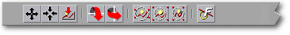
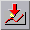
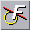

<!-- Documentation Xclamation (c)1994-2000 AXENE contact axene@axene.org>
<html>
<head>
<title>Barre horizontale d'icônes &quot;Dessin Vectoriel&quot;</title>
</head>

<body BGCOLOR="#FFFFFF" BACKGROUND="Images/back.gif" TEXT="#000000">
<p ALIGN="right">


<p>
<br>
<br>
La barre d'icônes 'Dessin Vectoriel' met à disposition
des outils permettant de modifier l'apparence d'un dessin vectoriel
dans son cadre. Pour accéder aux icônes de cette
barre, il faut impérativement qu'un cadre unique, contenant
un dessin vectoriel, soit sélectionné dans le plan
d'affichage du document actif.
<br>
<br>
<hr>
<br>
<center>
<br>
<i><small>
Photo d'écran&nbsp;: Barre d'icônes Dessin Vectoriel
</i></small>
</center><p>
<br>
<hr>
<br>
<p>
<h3>Première section de la barre d'icônes&nbsp;:</h3>
<ul>
  <li>
     <a NAME="move_icon">le premier
     bouton icône permet de <b>déplacer le dessin vectoriel</b>
     à 
     l'intérieur de son cadre. Il faut cliquer pour saisir
     le dessin, le repositionner, puis re-cliquer pour le déposer.
     Il est possible
     d'abandonner le déplacement du dessin, pendant son 
     repositionnement, en cliquant sur le bouton droit de la souris. 
     Un clic sur le bouton droit de la souris pendant que le dessin est
     fixe repasse Xclamation en mode sélection.
     </a><p>
  <li> <a NAME="center_icon">le
     second bouton icône permet de <b>recentrer le dessin vectoriel</b>
     dans son cadre. Le centre du dessin vectoriel correspond ainsi
     au centre du cadre.
     </a><p>
  <li> <a NAME="reset_icon">le
     troisième bouton icône permet de <b>réinitialiser le dessin vectoriel</b>,
     c'est-à-dire de le recentrer et de le remettre à
     sa taille initiale. 
     </a><p> 
</ul> 
<p>
<br>
<h3>Seconde section de la barre d'icônes&nbsp;:</h3>
<ul>
  <li> 
     <a NAME="fliph_icon">le
     premier bouton icône permet d'<b>inverser verticalement
     le dessin vectoriel</b> dans son cadre. L'effet miroir consiste à 
     effectuer une symétrie
     par rapport à l'axe horizontal passant par le centre du
     dessin. Si le cadre a subi une rotation, la symétrie
     se fait par rapport à l'axe horizontal affecté par
     l'angle de rotation du cadre.
     </a><p>
  <li> 
     <a NAME="flipv_icon">le 
     second bouton icône permet d'<b>inverser horizontalement
     le dessin vectoriel</b> dans son cadre. L'effet miroir consiste à 
     effectuer une symétrie
     par rapport à l'axe vertical passant par le centre du dessin.
     Si le cadre a subi une rotation, la symétrie se fait par
     rapport à l'axe vertical affecté par l'angle de
     rotation du cadre.
     </a><p> 
</ul>
<p>
<br>
<h3>Troisième section de la barre d'icônes&nbsp;:</h3>
<ul>
  <li> 
     <a NAME="min_aspect_icon">le
     premier bouton icône permet d'<b>afficher l'intégralité
     du dessin vectoriel sans déformation</b> dans son cadre. 
     Le facteur d'agrandissement du dessin change afin qu'il soit
     entièrement visible dans le rectangle virtuel circonscrivant
     le cadre. Ce bouton définit un mode d'affichage. Par la suite, 
     si la forme du cadre se modifie, le dessin s'adapte
     automatiquement aux nouvelles dimensions du cadre. Pour enlever
     ce mode d'affichage, il suffit de choisir l'un des deux autres modes
     ou de désactiver ce bouton.
     </a><p>
  <li> 
     <a NAME="max_aspect_icon">le
     second bouton icône permet de <b>remplir l'intégralité
     du cadre avec le dessin vectoriel sans déformation</b>. Le
     facteur d'agrandissement du dessin change pour que le cadre 
     soit entièrement
     rempli avec le dessin sans déformation de celui-ci. 
     Ce bouton définit un mode d'affichage. Par la suite,
     si la forme du cadre se modifie, le dessin s'adapte
     automatiquement aux nouvelles dimensions du cadre. Pour enlever
     ce mode d'affichage, il suffit de choisir l'un des deux autres modes
     ou de désactiver ce bouton.
     </a><p>
  <li> 
     <a NAME="best_aspect_icon">le
     troisième bouton icône permet de <b>remplir l'intégralité 
     du cadre en affichant l'intégralité du dessin vectoriel</b>.
     Le facteur d'agrandissement du dessin change indépendamment en horizontal et 
     en vertical, afin que les dimensions du dessin soient
     égales à celles du rectangle virtuel circonscrivant
     le cadre. Le dessin est donc déformée. Ce bouton
     définit un mode d'affichage. Par la suite, 
     si la forme du cadre se modifie, le dessin s'adapte
     automatiquement aux nouvelles dimensions du cadre. Pour enlever
     ce mode d'affichage, il suffit de choisir l'un des deux autres modes
     ou de désactiver ce bouton.
     </a><p> 
</ul>
<p>
<br>
<h3>Quatrième section de la barre d'icônes&nbsp;:</h3>
<ul>
  <li> 
     <a NAME="font_toggle_icon">le
     bouton icône donne le choix de l'<b>affichage des textes
     dans le dessin vectoriel</b>. Si ce mode n'est pas activé, les
     textes ne sont pas affichés. Les polices PostScript ne sont pas
     calculées ce qui permet un affichage plus rapide.
     </a><p> 
</ul>
<br>
<hr>
<p ALIGN="right">
<p>
</body>
</html>
